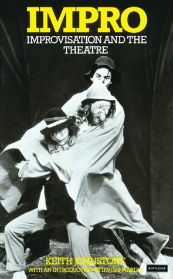
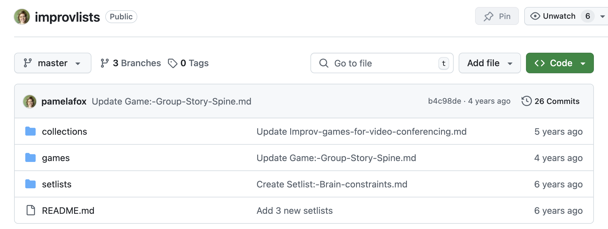
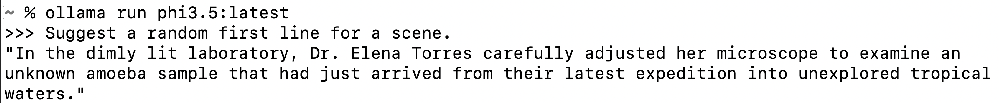

Playing improv
...with Python?
pamelafox.github.io/improv-with-python/
pamelafox.org
🐦 @pamelafox
🐘 @pamelafox@fosstodon.org
Discovering improv
🎭
My first improv?

Blog post: Towards more "yes, ands" and less "buts"
Reading about Improv

Impro: Improvisation and the Theatre
By Keith Johnstone
My GoodReads rating from 2015:

So Many Improv Classes
Spreading improv
🤗
Running an improv club

Bringing improv to work
Our afternoon "shake-off" at Woebot:

LA Times article about Woebot
Laser cutting for improv


Documenting improv
Because apparently I document everything...
 github.com/pamelafox/improvlists/Improv games
🎲
Flavors of improv games
- Verbal
- Storytelling
- Word games
- Generative games
- Physical
- Space objects
- Working with props
- Character building
- Scene building
- Status games
- Musical improv
Let's play: Story Spine
- Once there was…
- And every day…
- Until one day…
- And because of that…
- And because of that…
- And because of that…
- Until finally…
- And so…
- The moral of the story is:
Full rules: Group-Story-Spine.md
Playing improv with Python
🐍
Can we play improv with a computer?
We need the computer to generate a creative human-like response.
Possible tools:
- Hidden markov models
- Custom trained ML models
- Large/Small Language Models
Language Models
Let's try these models...
| Company | Model | Parameters | Host |
|---|---|---|---|
| OpenAI | gpt-4o-mini | ?? | OpenAI.com, Azure, GitHub Models |
| Meta | Llama3.1 | 8B, 70B, 405B | Azure, GitHub Models, Ollama |
| Microsoft | Phi3 | 3.8B, 14B | Azure, GitHub Models, Ollama |
| Mistral | Mistral small | ?? | Azure, GitHub Models, Ollama |
Ollama
Ollama is a tool for easily running local LLMs on your computer.
You can also run it from GitHub Codespaces: 🔗 github.com/pamelafox/ollama-python-playground
We can call Ollama programmatically using:
HTTP, ollama package, or openai package.
GitHub Models
GitHub models are freely available models with very low rate limits. 😢 Currently waitlist only, sign up at: github.com/marketplace/models

We can call GitHub models programmatically using:
HTTP, azure-ai-inference package, or openai package.
Using the OpenAI SDK
Since the openai package can be used for both Ollama and GitHub models, we'll use it for most examples.
response = client.chat.completions.create(
model=model_name,
messages=[
{"role":"system",
"content":"You're playing improv games."},
{"role":"user",
"content":"Suggest a random first line."}],
)
Full code: example.py
Game: Story Spine
Let's start easy!
Rules: Game: Group Story Spine
Code: storyspine.py
Takeaways:
- Different models, different results
- Some models are very wordy
- Some models are very repetitive
- It's fun to mix/match models and users
Game: Sentence-at-a-time Story
AKA: Will the language model ever end the story?
Rules: Sentence-at-a-time-Story.md
Code: sentenceatatime.py
Game: Word-at-a-time Story
AKA: Why can't language models count?
Rules: Tweet-Generator.md
Code: tweetgenerator.py
Approaches:
- Few shot learning
- Post-processing
- Fine-tuning
Game: Yes, And Product Factory
AKA: Can we use props??
Rules: Yes,And-Product-Factory.md
Code: yesandproduct.py
Yes, with multimodal models!
Three Things!
AKA: Can we make lists??
Rules: 3-Things!.md
Code: threethings_simple.py
Yes, but use function calling,
if model supports it.
Ollama blog: Tool support for language models
Add few-shot examples to improve response quality.
Langchain blog: Few-shot prompting to improve tool calling
Other options:
- Instructor for structured outputs
- Outlines for JSON outputs
- Structured Outputs from OpenAI (Not yet supported in Ollama)
Lessons learned
- Larger models are better at following the rules
- Doing *anything* with language models teaches you a lot about them
- Improv with computers is fun!
- Improv with humans is more fun!